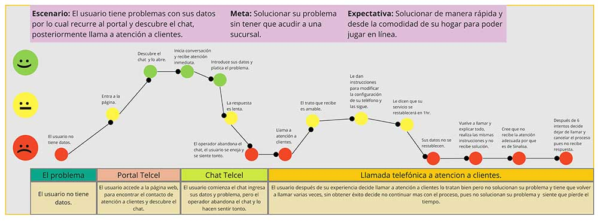
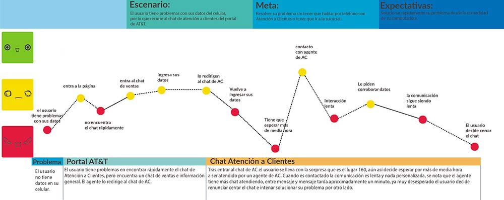
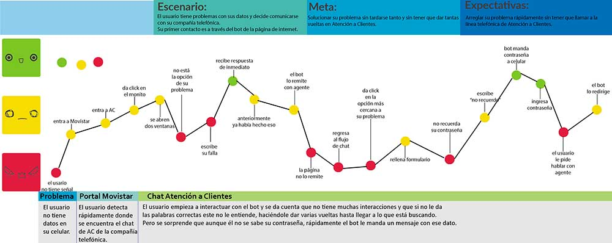
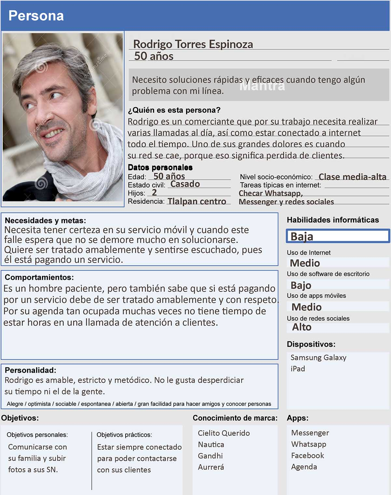
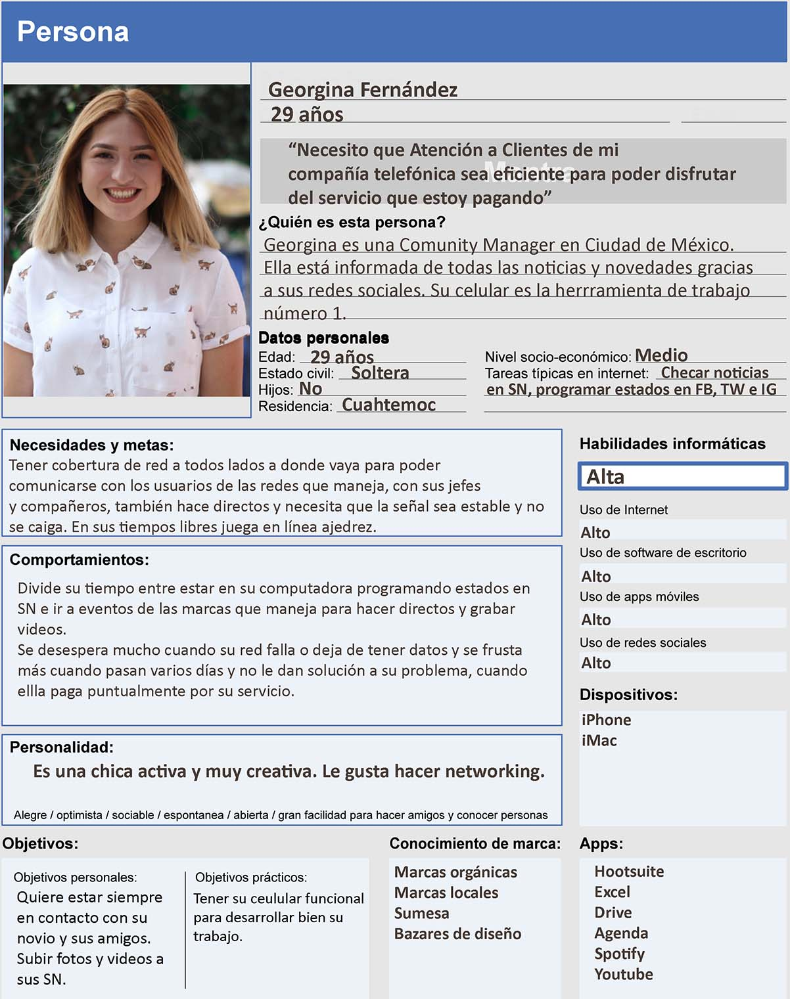

Introducción:

TELMOBI(compañía ficticia de telecomunicaciones) es una de las principales empresas de telecomunicaciones en México que actualmente provee servicios de telefonía móvil e Internet y, en menor medida, telefonía fija. A partir de junio de este año, el Instituto Federal de Telecomunicaciones (IFT), aprobó la fusión de TELMOBI con Verne, empresa con liderazgo mundial en medios y contenidos. El objetivo de esta megafusión es ofrecer servicios de cuádruple play: telefonía fija y móvil, internet y televisión.
Tras esta fusión y la implementación de nuevos servicios aumentó la carga de trabajo de varias áreas, entre ellas el área de call center que atiende los casos de atención a clientes para resolver problemas y levantar números de reporte con relación a fallas de servicio, problemas de hardware, software, aplicaciones y otros.
Cliente:
TELMOBI(compañía ficticia de telecomunicaciones)
El Equipo:
UX Research: Estephania Molina.
Mi papel:
UX Research
Problema:
TELMOBI(compañía ficticia de telecomunicaciones), ha decididio implementar un asistente virtual (Chatbot) para reducir las llamadas que ingresan al call center, ayudando al usuario a resolver los problemas más frecuentes.
Acciones:
Para este proyecto se inició con un research, posteriormente un prototipo de baja fidelidad y por último un prototipo de baja fidelidad.
Mi contribución:
En este proyecto me hice cargo de la parte del research.
Proceso
Para esta investigación decidimos acercarnos a los siguientes métodos de investigación:
Research
Dentro de la investigación, nos dimos a la tarea de mapear el proceso de los usuarios de las principales telefonías de México.
Los resultados fueron los siguientes:
Telcel
AT&T
Movistar (la única telefonía con Chatbot en redes sociales)
Con esto detectamos los siguientes insights:
Entrevistas:
Para hacer nuestras user personas decidimos basarnos en entrevistas e información recabada en el IFT.
Los principales insights de estas entrevistas fueron los siguientes:
Con esta información llegamos a la conclusión de que por lo menos tendríamos que crear a dos User Persona, una muy familiarizada con la tecnología y la otra sin tanto conocimiento.
User Persona
 Prototipo de alta fidelidad
Para este proyecto decidimos que el primer alcance del chatbot sería por medio de redes sociales. En este caso creamos una fanpage de "Telmobi" y vinculamos la plataforma BotStar con esta cuenta.
Si quieres interactuar con Sofía, da click aquí